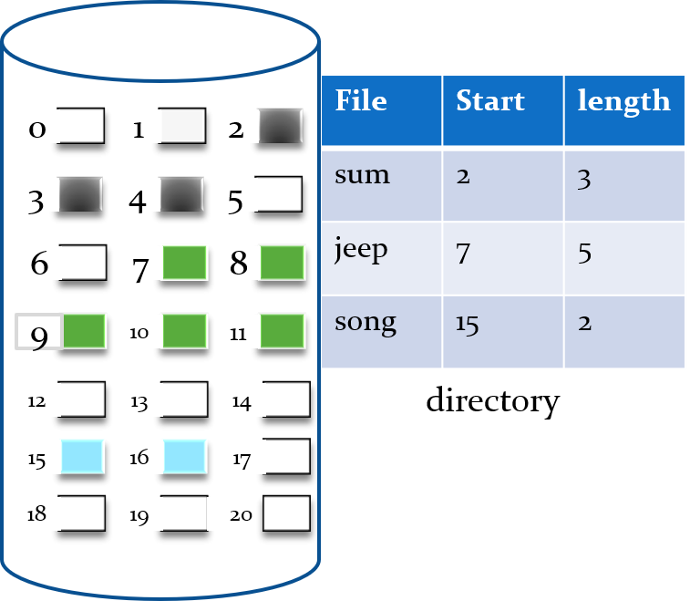
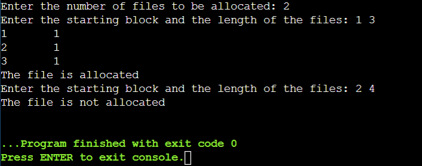
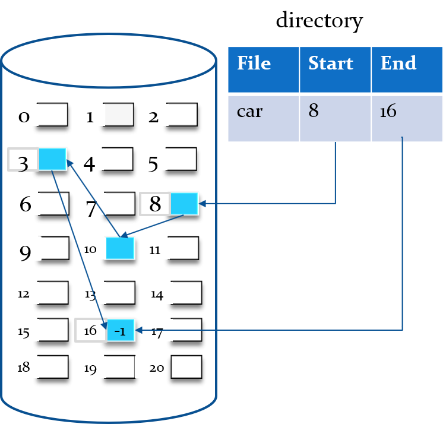
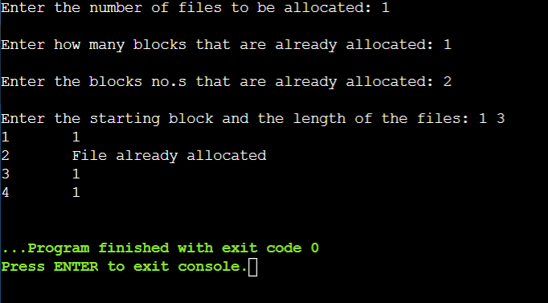
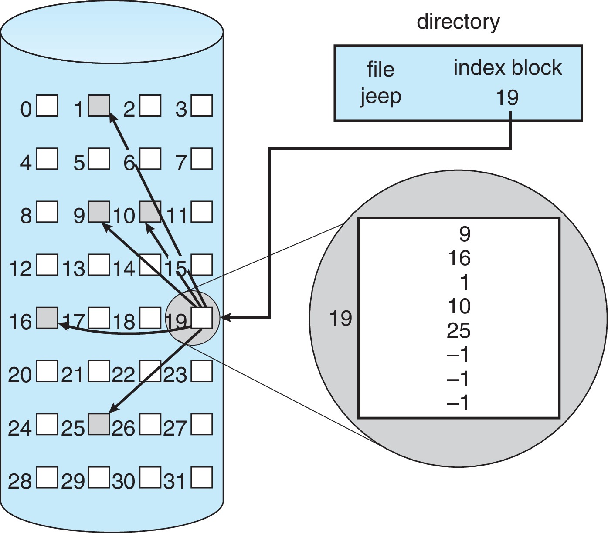
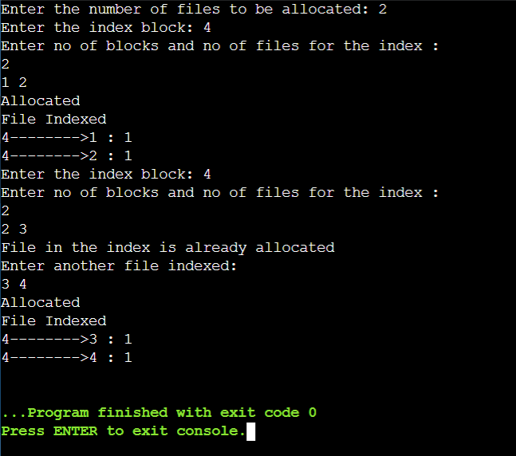

File allocation
The allocation methods define how the files are stored in the disk blocks. There are three main disk space or file allocation methods.
1.Contiguous allocation
2.Linked allocation
3.Indexed allocation
The main idea behind these methods is to provide:
1. Efficient disk space utilization.
2. Fast access to the file blocks.
Contiguous allocation
In this scheme, each file occupies a contiguous set of blocks on the disk. For example, if a file requires n blocks and is given a block b as the starting location, then the blocks assigned to the file will be: b, b+1, b+2,……b+n-1. This means that given the starting block address and the length of the file (in terms of blocks required), we can determine the blocks occupied by the file.
The directory entry for a file with contiguous allocation contains:
1. Address of starting block.
2. Length of the allocated portion.
Example:
Advantages:
1. Both the Sequential and Direct Accesses are supported by this. For direct access, the address of the kth block of the file which starts at block b can easily be obtained as (b+k).
2. This is extremely fast since the number of seeks are minimal because of contiguous allocation of file blocks.
Disadvantages:
1. This method suffers from both internal and external fragmentation. This makes it inefficient in terms of memory utilization.
2. Increasing file size is difficult because it depends on the availability of contiguous memory at a particular instance.

Linked List Allocation
In this scheme, each file is a linked list of disk blocks which need not be contiguous. The disk blocks can be scattered anywhere on the disk.
The directory entry contains a pointer to the starting and the ending file block. Each block contains a pointer to the next block occupied by the file.
Example:
Advantages:
1. This is very flexible in terms of file size. File size can be increased easily since the system does not have to look for a contiguous chunk of memory.
2. This method does not suffer from external fragmentation. This makes it relatively better in terms of memory utilization.
Disadvantages:
1. Because the file blocks are distributed randomly on the disk, a large number of seeks are needed to access every block individually. This makes linked allocation slower.
2. It does not support random or direct access. We can not directly access the blocks of a file. A block k of a file can be accessed by traversing k blocks sequentially (sequential access ) from the starting block of the file via block pointers.
3. Pointers required in the linked allocation incur some extra overhead.

Indexed Allocation
In this scheme, a special block known as the Index block contains the pointers to all the blocks occupied by a file. Each file has its own index block. The ith entry in the index block contains the disk address of the ith file block.
Example:
Advantages:
1. This supports direct access to the blocks occupied by the file and therefore provides fast access to the file blocks.
2. It overcomes the problem of external fragmentation.
Disadvantages:
1. The pointer overhead for indexed allocation is greater than linked allocation.
2. For very small files, say files that expand only 2-3 blocks, the indexed allocation would keep one entire block (index block) for the pointers which is inefficient in terms of memory utilization. However, in linked allocation we lose the space of only 1 pointer per block.
